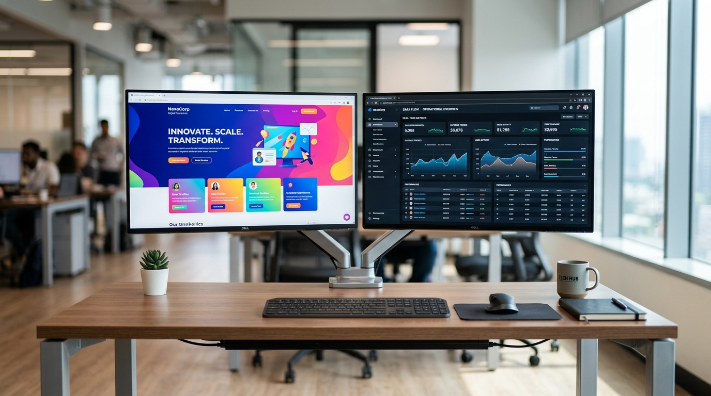

Website vs Web Application
Mengetahui perbedaan mendasar serta memilih solusi yang tepat untuk kebutuhan spesifik perusahaan Anda.

Banyak orang menggunakan istilah "Website" dan "Web Application" secara bergantian. Namun dalam dunia pengembangan perangkat lunak (software development), keduanya merujuk pada dua hal yang memiliki fungsi dan kompleksitas yang jauh berbeda.
Apa itu Website?
Fokus utama website adalah memberikan informasi. Website bersifat statis atau informatif. Pengunjung datang ke website untuk membaca, melihat-lihat, atau mengonsumsi konten, tetapi mereka tidak banyak berinteraksi (mengubah data) di dalamnya.
Contoh Website: Company Profile, Blog, Portal Berita, Landing Page Produk.
Apa itu Web Application?
Fokus utama Web Application adalah fungsionalitas dan interaksi. Web App dirancang bagi pengguna untuk melakukan suatu tugas, memanipulasi data, berkolaborasi, dan berinteraksi secara kompleks.
Contoh Web App: Gmail, Sistem Kasir (POS) online, Dashboard HRD, Google Docs, Sistem Inventori.
Mengapa Perbedaan Ini Penting?
Perbedaan ini sangat krusial ketika Anda meminta penawaran (quotation) ke sebuah Software House.
- Membuat Website Company Profile biasanya memakan waktu beberapa minggu dan berfokus pada desain UI/UX, SEO, dan copywriting.
- Membuat Web Application (seperti ERP atau Sistem Manajemen) memakan waktu berbulan-bulan dan berfokus pada arsitektur database, keamanan data, role/hak akses pengguna, dan kompleksitas alur logika bisnis.
"Singkatnya: Jika pengguna datang hanya untuk membaca, Anda butuh Website. Jika pengguna datang untuk melakukan sesuatu dan memproses data, Anda butuh Web Application."
Konsultasikan Kebutuhan Anda
Apakah Anda butuh sekadar website profil, atau sistem aplikasi web yang kompleks? Mari diskusikan bersama kami.
Mulai Diskusi